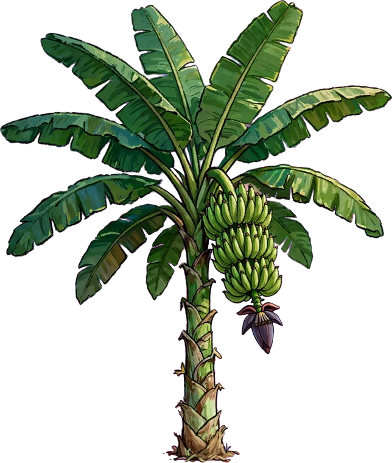
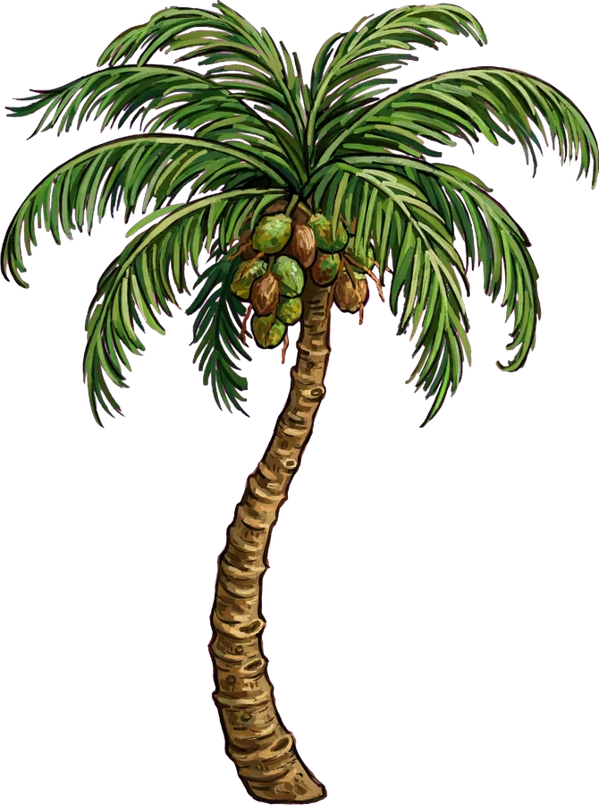
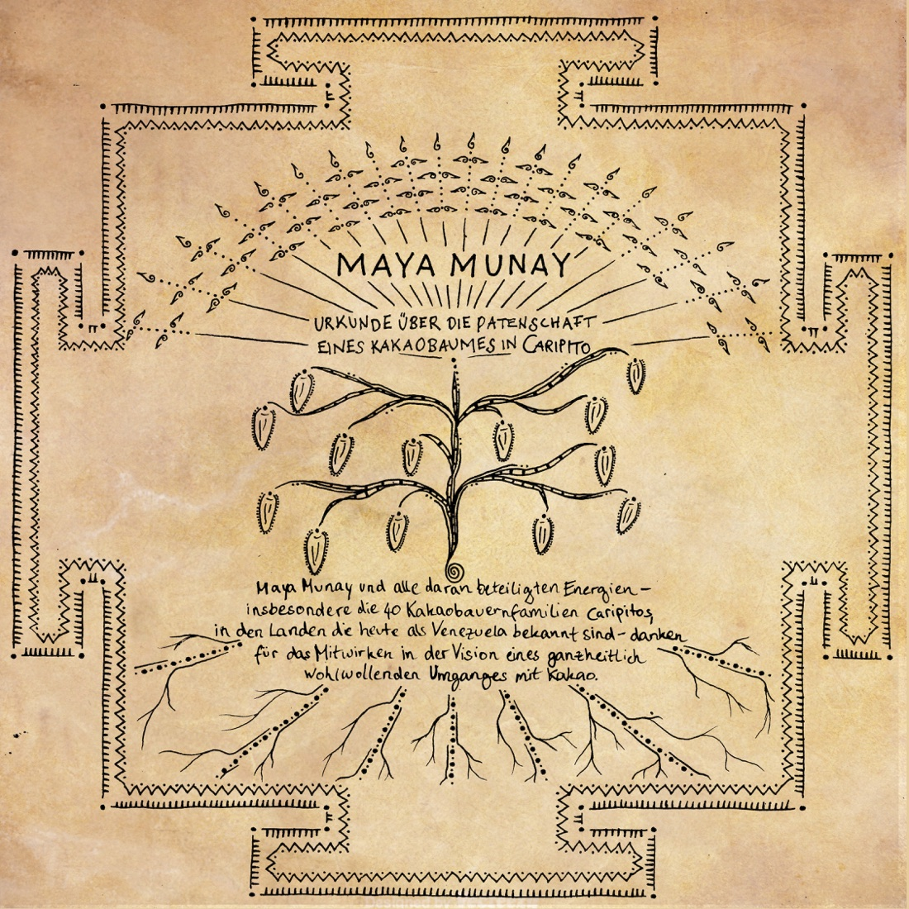

Dein Rucksack

·
Wissensbuch
lädt dich ein auf die
Ein Lernspiel mit dem Kakao von Maya Munay · Entwurf, nicht veröffentlicht
Magst du dein Gerät quer halten? Dann wird die Szene größer.



·
lädt dich ein auf die
Ein Lernspiel mit dem Kakao von Maya Munay · Entwurf, nicht veröffentlicht